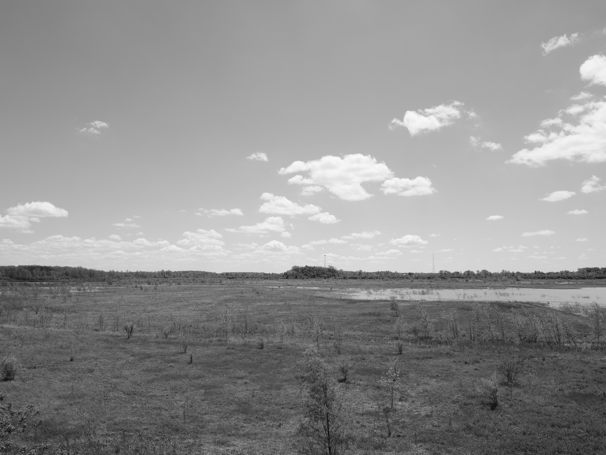
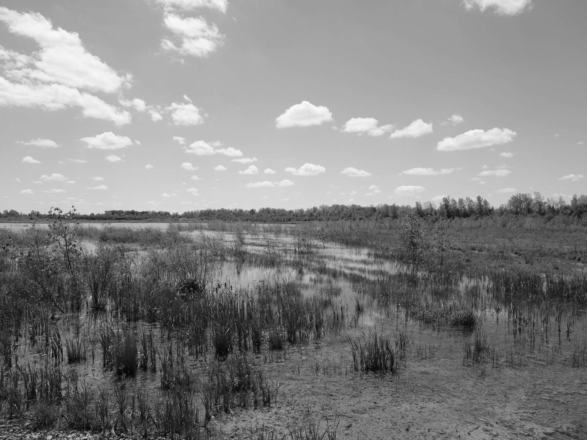
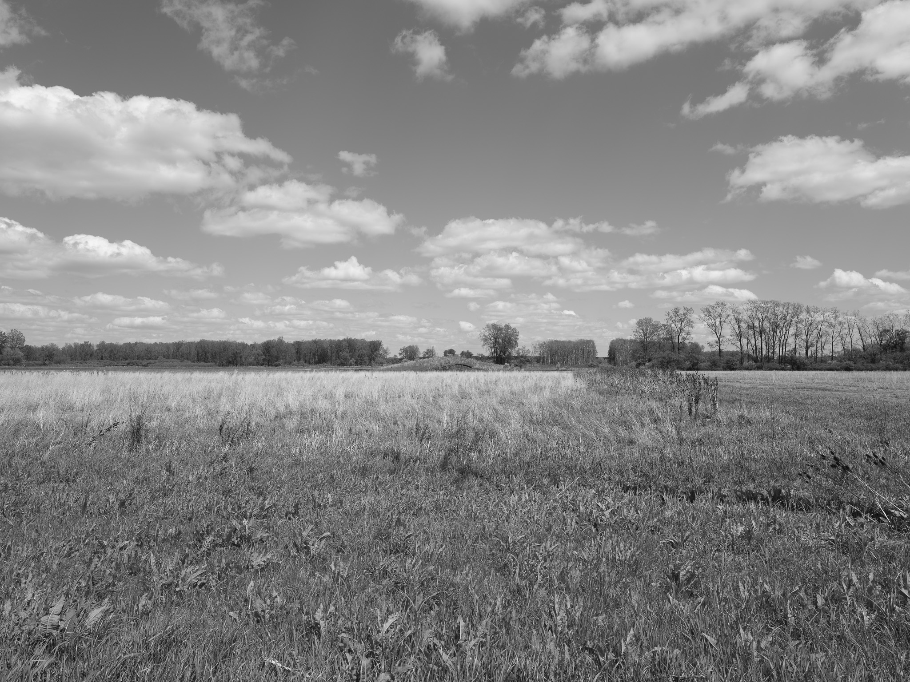
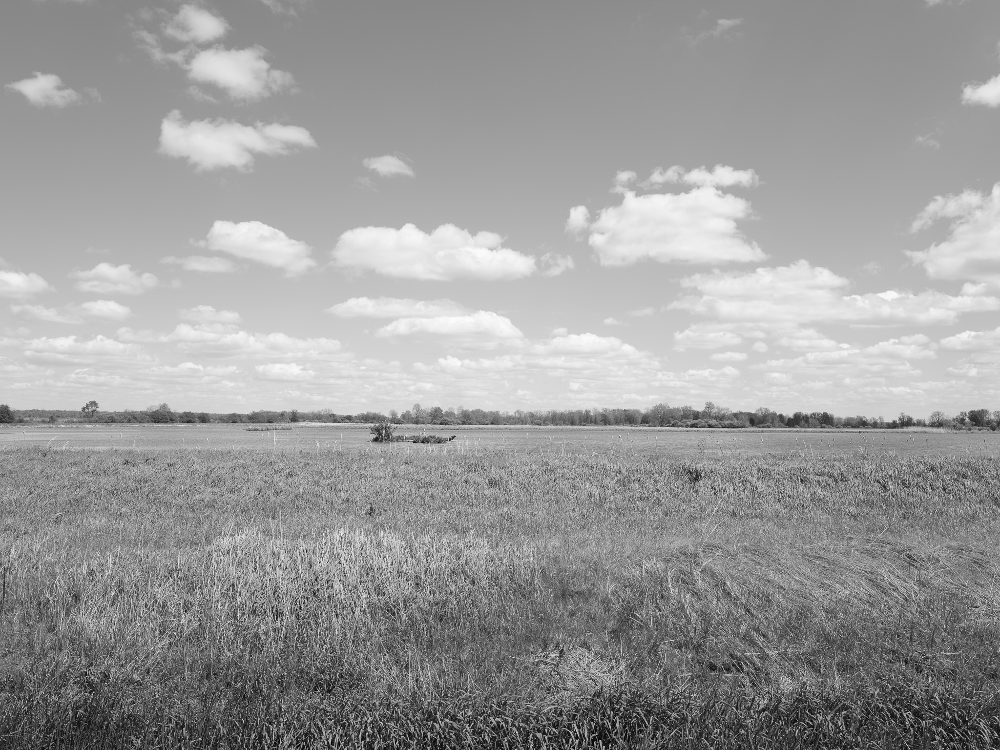

Public Lands Institute
Map
Archive
About
Killdeer Plains Wildlife Area
OH

Killdeer Plains Wildlife Area 1 · 2026-05-07
_DSF1982.jpg

Killdeer Plains Wildlife Area 2 · 2026-05-07
_DSF1983.jpg

Killdeer Plains Wildlife Area 3 · 2026-05-07
_DSF1995.jpg

Killdeer Plains Wildlife Area 4 · 2026-05-07
_DSF1999.jpg
View all 4 images →
← William C. Sterling State Park
Pointe Mouillee State Game Area →